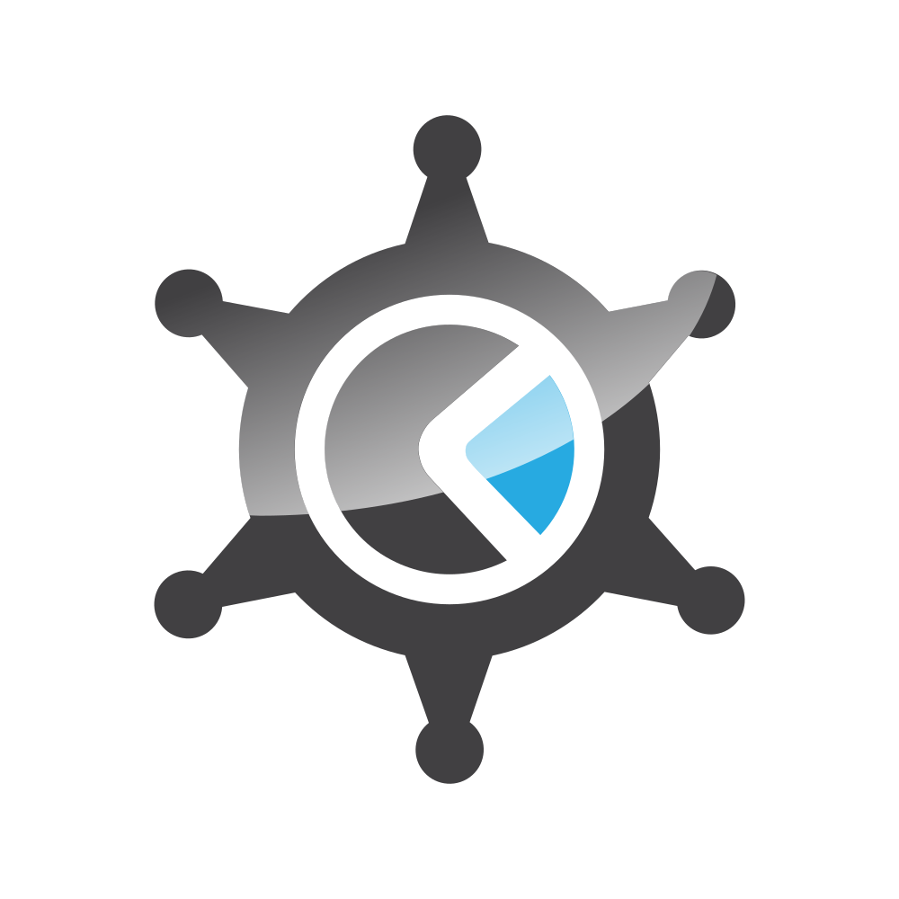
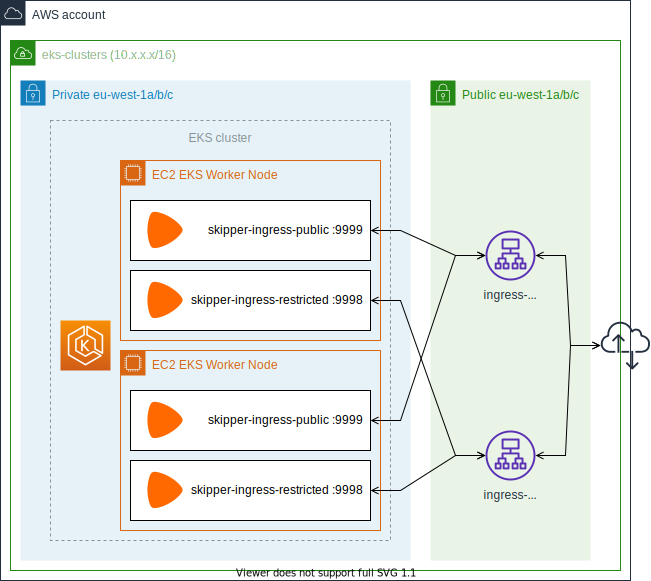
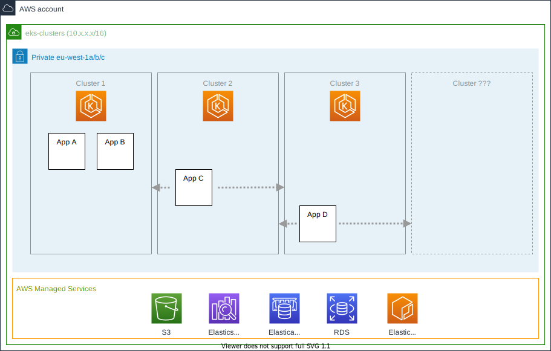
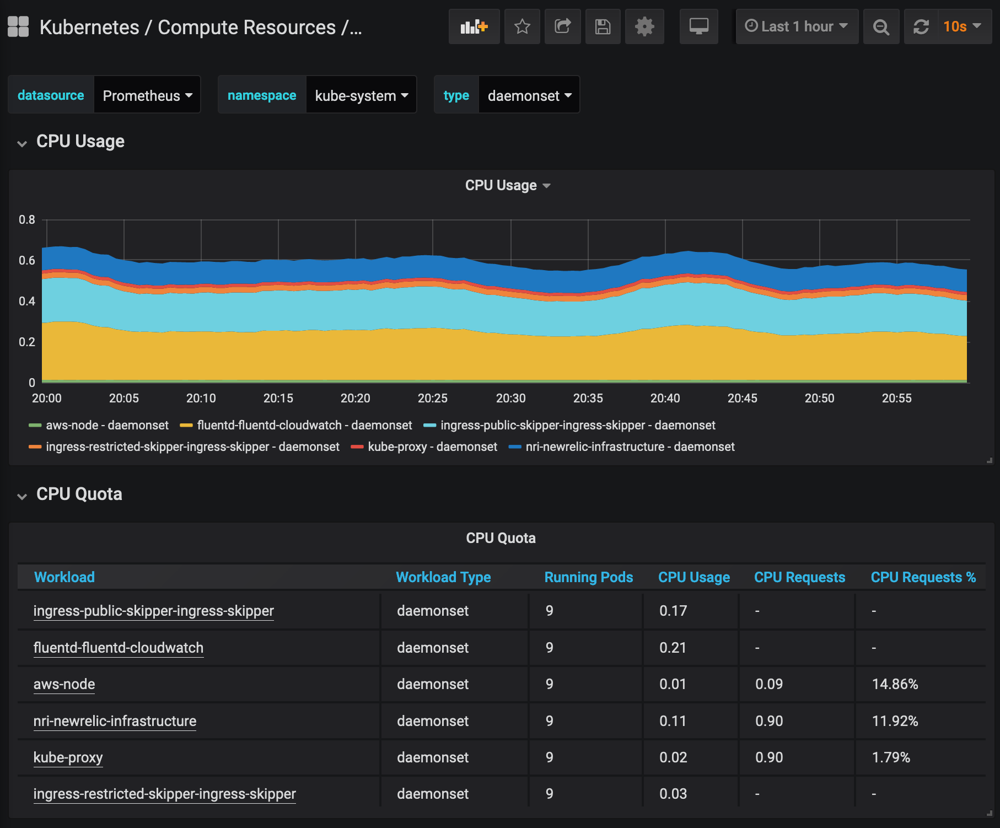
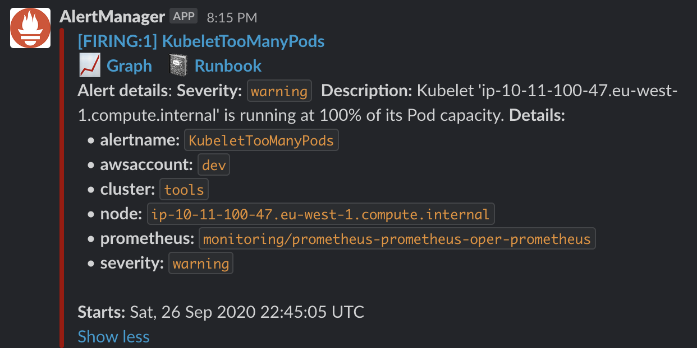

EKS Cluster
Ingress
Multiple clusters
Flexibility
Prometheus
Dashboards
Prometheus
Alerts
Comparison
Evolution
| v1 | v2 | |
|---|---|---|
| Provisioning | Kops | Terraform |
| Kube-system components | Kops-based templating | Helm / Helmfile |
| Control plane | self-managed | EKS |
| Max. clusters per AWS account | 1 | Unlimited |
| Logging | ELK (Filebeat) | Cloudwatch (Fluentd)1 |
| Metrics | ELK (Metricbeat) Prometheus | New Relic Prometheus operator |
| Ingress controller | Skipper + ip annotations | Skipper 2x (public/restricted) |
| Ingress AWS ALBs | kube-ingress-aws-controller + Cloudformation | Terraform provisioned |
1Becoming increasingly expensive. Search capabilities of insights is not as good as Kibana.